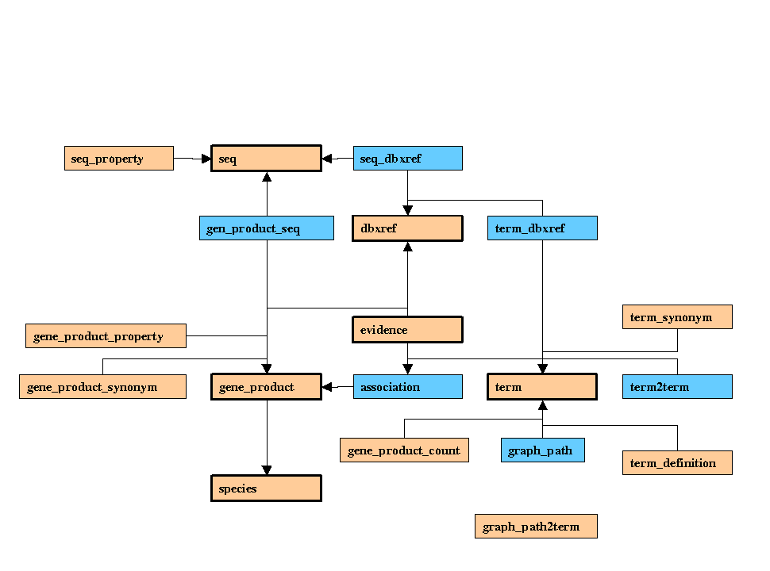

This page contains diagrams showing the structure of the GO database - these are contributed by third parties, and may be incorrect or out of date with respect to the most current GO database. However, they should give a good idea of the general structure and primary/foreign key relationships
This table does not show any columns, but it does show the foreign key dependency structure concisely
contributed by...
